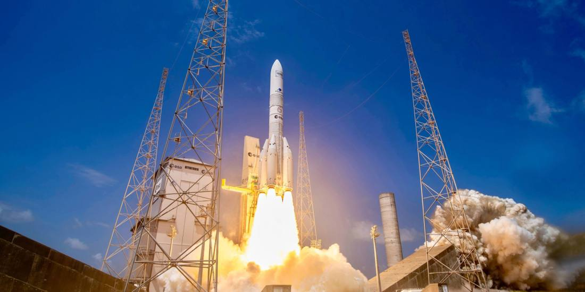

Amazon Leo LE-04: All 36 Satellites Deployed, Constellation Passes 400 (Update to Issue 511)
Arianespace confirmed on November 24, 2026 that all 36 Amazon Leo satellites on the LE-04 mission were deployed, two hours and four minutes after liftoff. Amazon has taken control from its Redmond mission operations centre and will raise the satellites to their 630-kilometre operating orbits. The constellation now totals 432 satellites in orbit.

- 01THE LIFTOFF — November 24, 2026, 11:14 UTC: Ariane 6 lifts off from Kourou with 36 Amazon Leo satellites, at the end of the rescheduled window.
- 02THE DEPLOYMENT — About two hours and four minutes later, the last satellite separates; Arianespace confirms all 36 deployed into low Earth orbit at approximately 460 kilometres.
- 03THE HANDOVER — Amazon's team assumes control from its mission operations centre in Redmond, Washington, and begins initial contact and health checks.
WHAT HAPPENEDWhat Happened
Arianespace confirmed on November 24, 2026 that all 36 Amazon Leo satellites aboard the LE-04 mission were successfully deployed, closing the mission two hours and four minutes after liftoff at 11:14 UTC. The satellites were delivered into low Earth orbit at an altitude of approximately 460 kilometres. Spaceflight Now updated its live coverage at 15:25 UTC with the same confirmation: Arianespace successfully deployed all 36 satellites.
Amazon said its team has assumed control of the satellites from its 24-hour mission operations centre in Redmond, Washington. Following initial contact and health checks, the team will raise the satellites to their assigned operating altitude of 630 kilometres and commission them for service. The deployment brings the number of Leo satellites launched by Arianespace to 136, and the constellation total to 432 satellites in orbit, passing 400 for the first time.
The confirmation closes the open question left by Issue 511, published while the rocket was still in its first coast phase. Liftoff came at the end of the 10:45 to 11:14 UTC window, a day after a ground-support technical event halted the November 23 countdown. It was the tenth Ariane 6 flight overall, the fourth carrying Leo satellites in 2026, and the fourth flight of the four-booster Ariane 64 configuration.
WHY IT MATTERSThe deployment gate is cleared; the cadence gate is next.
LE-04 is now a completed mission, not a launch in progress. With all 36 satellites deployed and under Amazon's control, Ariane 6 has flown four Leo batches this year without a failure, and the 136 satellites it has placed in orbit are the backbone of a constellation that has now passed 400 spacecraft.
The count still frames the scale of the task. The constellation stands at 432 satellites against a 3,232-spacecraft first-generation plan, and the Federal Communications Commission still requires the full constellation by July 30, 2029. Deployment is confirmed; the question from here is how many more launches Arianespace, and eventually Vulcan and New Glenn, can deliver in 2027.
THE WATCHPOINTRaising to operating orbit is the next observable step.
The satellites are in a roughly 460-kilometre deployment orbit and must be raised to 630 kilometres and commissioned before they carry traffic. Amazon's updates on initial contact and health checks are the next facts to watch; a clean raise-and-commission sequence keeps the late-2026 commercial service opening on track.
The wider watch is the manifest. Amazon raised its Arianespace order from 18 to 24 launches in September 2026, and Arianespace is the provider carrying the constellation while Vulcan is grounded and New Glenn's return is pushed to early 2027. Every further slip on any of the three rockets pushes the service opening further out.
THE SHIFTWhat Changed
SIGNAL JUDGMENT — ANALYSISThe launch is now a completed mission; the clock moves to orbit-raising and cadence.
Tokenta Signal's judgment: LE-04 is complete, and the confirmation matters because it removes the last uncertainty from a launch Amazon could not afford to lose. Ariane 6 is now four for four on Leo batches this year, and the constellation has passed 400 satellites. The honest caveat is unchanged: 432 of 3,232 is still early, and the service opening depends on the satellites reaching their operating orbits and on the launch cadence holding through 2027.
WHAT REMAINS UNCERTAINWhat Remains Uncertain
EVIDENCEEvidence
Arianespace confirmed on November 24, 2026 that all 36 Amazon Leo satellites on the LE-04 mission were deployed into low Earth orbit at approximately 460 kilometres, two hours and four minutes after liftoff, and Amazon has taken control of the satellites from its mission operations centre in Redmond.
PRIMARY SOURCESPrimary Sources
- Arianespace: Arianespace successfully launches another 36 Amazon Leo satellites on Ariane 6's 10th flight
https://newsroom.arianespace.com/?p=51508 - Spaceflight Now: Arianespace launches 36 Amazon Leo sats amid rocket crunch
https://spaceflightnow.com/2026/11/23/live-coverage-arianespaces-launches-amazon-leo-sats-amid-rocket-crunch/ - Amazon: Amazon Leo mission updates: More than 400 satellites deployed after fourth Ariane 6 mission of 2026
https://www.aboutamazon.com/news/innovation-at-amazon/project-kuiper-satellite-rocket-launch-progress-updates